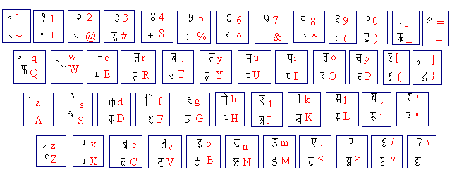
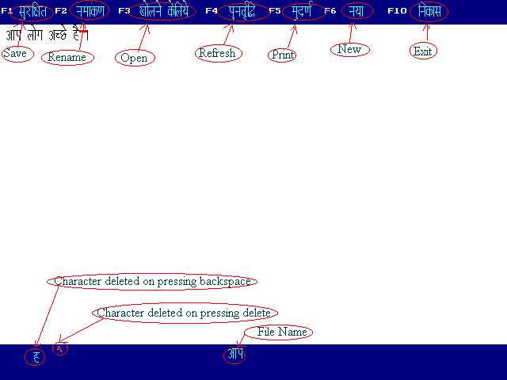

Akshar Help
Function Keys Openning page Important

F1
Save File
F2
Rename
F3
Open Existing File
F4
Refresh the display
Since, sometimes, the display becomes ambiguous while editting,
because of some bugs in the program.
F5
Prints File
F6
New File
F10
Exit the program

This snap shows what is displayed where on the editor screen
Important points to be taken care of
File name
This editor saves the file with .HIF extension. Don't give the extension while entering the file name in the program.
Avoid giving the file name with following characters
Since these characters are illigal characters for file name in DOS.
In this editor we have a limitation of 15 lines only.
More than 15 lines can be printed in batches.